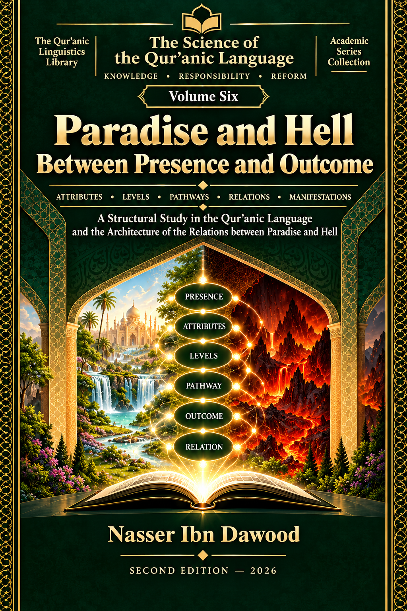

Nasser Ibn Dawood
Text extracted from the author-supplied Word edition; consult the original source.
Preparing the reader…
ENCYCLOPEDIA OF THE ARCHITECTURE OF RECOMPENSE IN THE QUR'AN
VOLUME VI
PARADISE AND FIRE
Between Presence and Ultimate Outcome
Condensed Conceptual English Edition
Nasser Ibn Dawood
2026
A concise conceptual adaptation of the Arabic reference volume.
I. The Global Knowledge Manifesto
Knowledge is a universal right. The author firmly believes that wisdom should not be locked behind paywalls or language barriers.
Global Access Policy: All books in this library are available for free in multiple digital formats (PDF, HTML, DOCX, TXT).
The Digital Library: As of early 2026, the collection hosts 68 volumes (34 in Arabic and 34 in English), fully optimized for AI-assisted research and digital archiving.
Official Platforms: Main Website: nasserhabitat.github.io/nasser-books/
GitHub: nasserhabitat/nasser-books
Editorial Purpose
This condensed edition is designed for the international reader who wants to understand the architecture of the argument without reproducing the full Arabic research apparatus. It preserves the central distinctions, methodological safeguards, major textual fields, and the final hierarchy of claims.
The source volume contains six parts and thirty-four legal/structural chapters. Its governing discipline is simple: establish only what the textual evidence supports, at the rank the evidence supports, and stop where the evidence stops.
II. Translator's Note: The Bridge of Meaning
This English edition is a condensed conceptual adaptation. It is not a word-for-word translation, but rather an "extraction of essence." It presents the core philosophical framework in accessible English, omitting the exhaustive linguistic debates and classical references found in the original Arabic text.
For the academic researcher: The original Arabic version remains the primary source for comprehensive linguistic analysis, detailed exegesis (Tafsir), and the complete bibliography.
A Note on Terms
Several Qur'anic terms are retained in transliteration because the argument depends on distinguishing textual labels before translating them into broad conceptual equivalents. Key terms are therefore introduced in the form: transliteration (Arabic) - approximate English function.
Jannah (الجنة): garden / Paradise, depending on textual field.
Nar (النار): fire, a term that appears across several fields and is not restricted to punishment.
Ma'al (المآل): ultimate outcome, end-point, or final destination in the studied context.
Hudur (الحضور): presence - a term used here for occurrences within lived, narrative, material, or non-final fields.
Jaza' (الجزاء): recompense as a relation between what precedes and the resulting output.
Adhab (العذاب): punishment / affliction, treated as a negative recompensive state rather than as a synonym for fire.
The English renderings are functional aids, not claims of perfect lexical equivalence.
How This Book Reads the Qur'anic Text
The volume is not built around a pre-selected theology of Paradise and Hell. It asks a prior methodological question: what structure can be demonstrated from the Qur'anic corpus itself, and what must remain open?
The working sequence is: direct text -> corpus collection -> observation of relations -> candidate function -> resistant evidence -> reverse test -> stability point -> claim status.
Claim status
Meaning in this edition
Established
Supported directly within the tested scope.
Strong within scope
Supported by a coherent cluster of resources, without warrant for universalization.
Open [H]
A candidate hypothesis that remains testable and resistible.